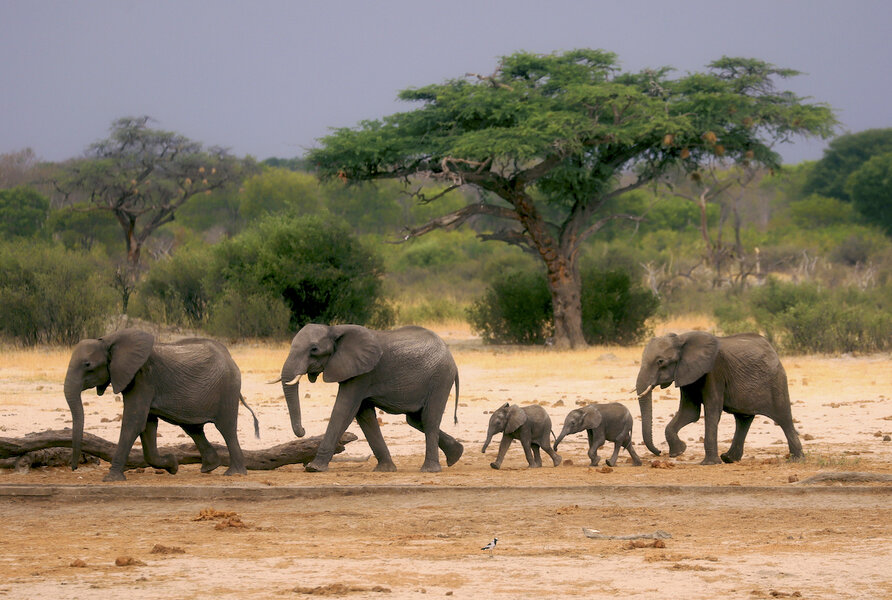
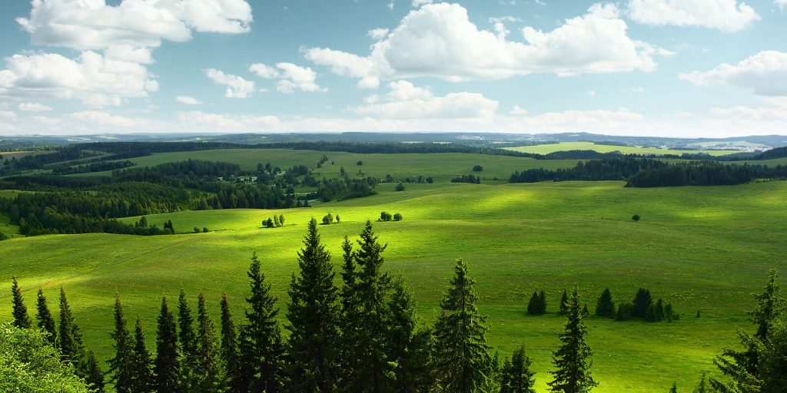
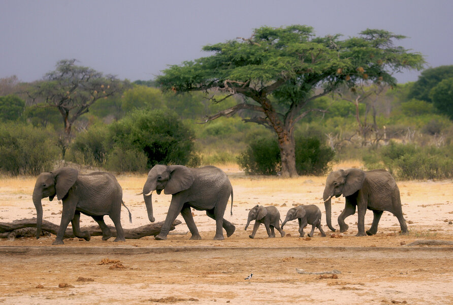
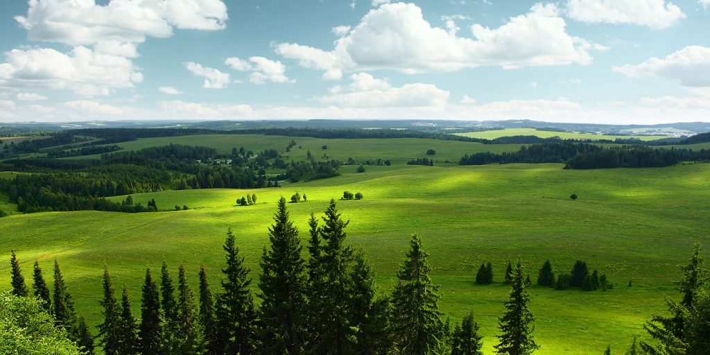
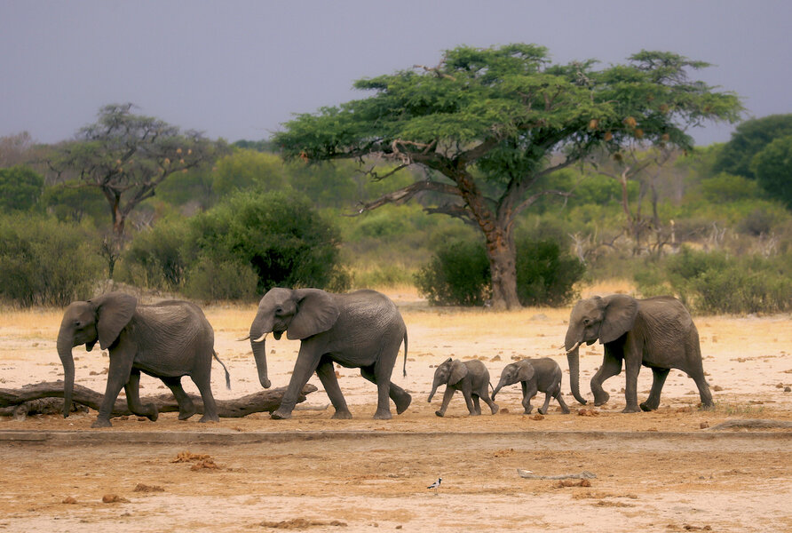
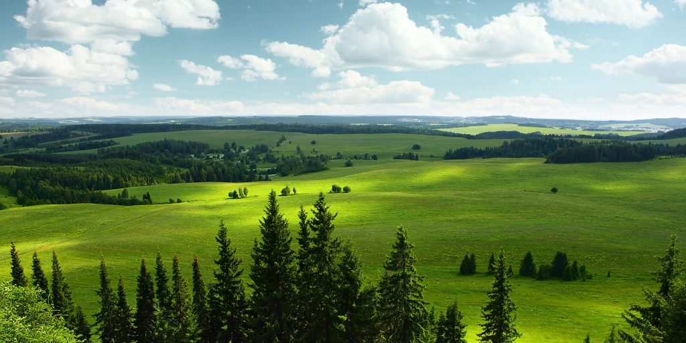
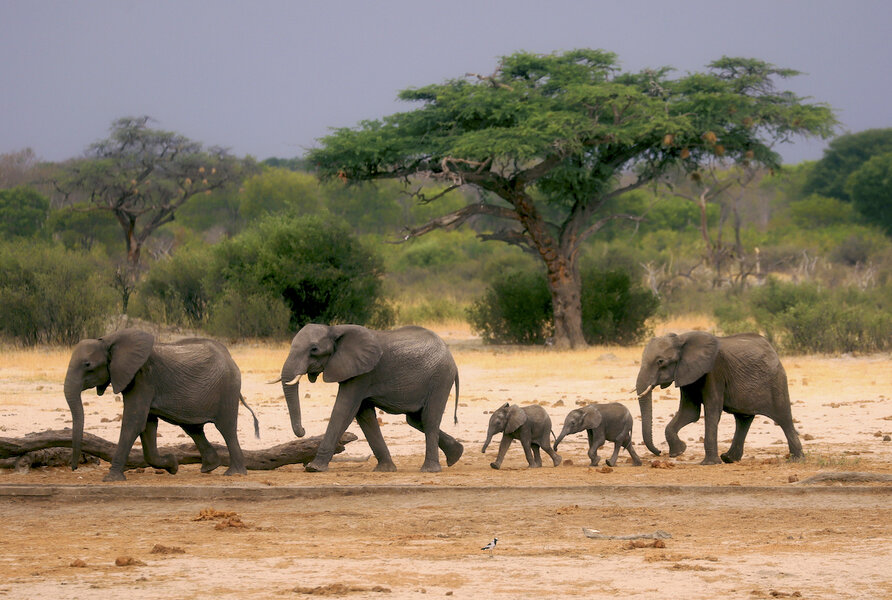
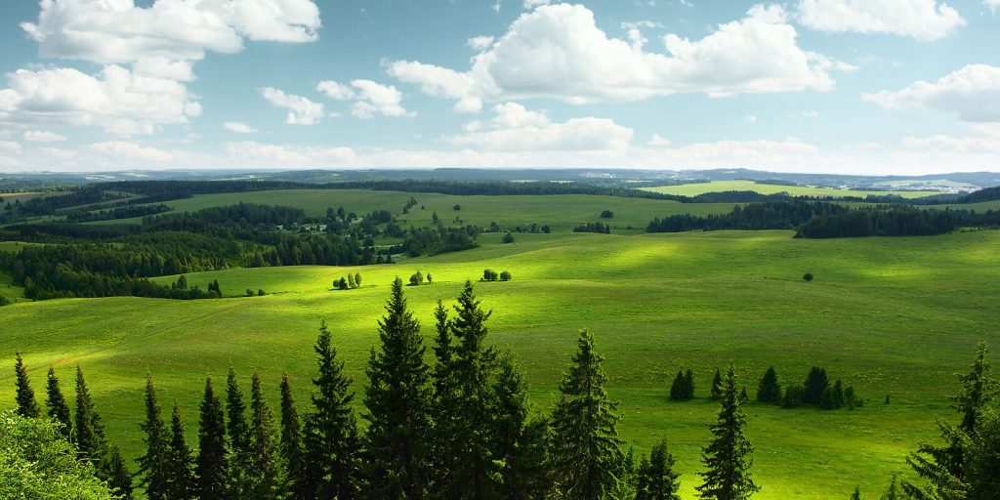
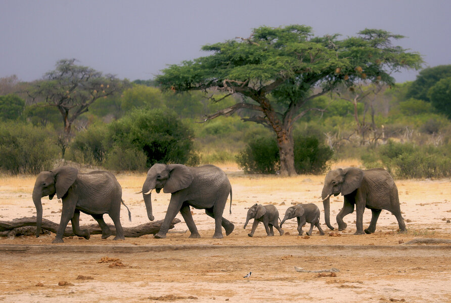
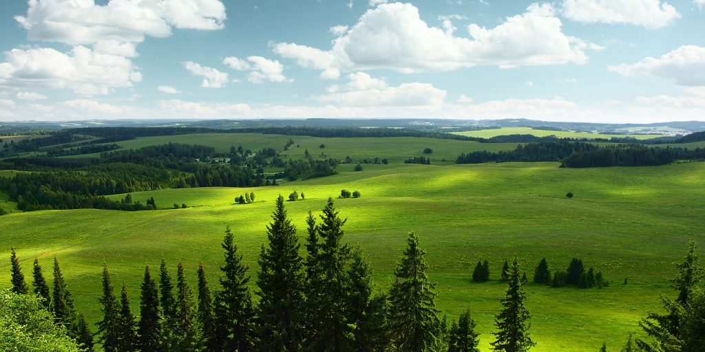

Home
Gallery
Food
Welcome to the World of Data Science
Don't we all love us some Mother Nature!


Gotta take care of the stomach
Click on your preffered food for more info!
Lasagna
Piza
Biryani
Jolof Rice
quesadillas
 






